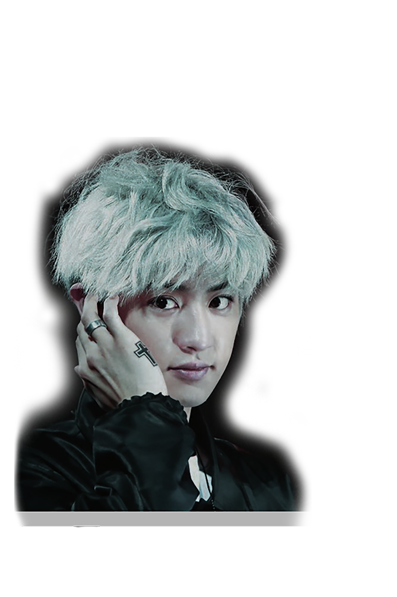
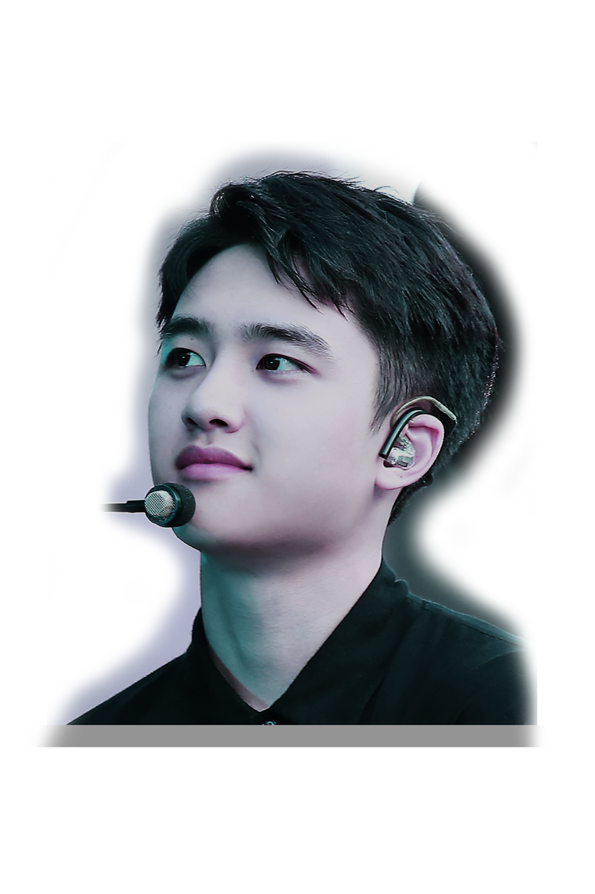
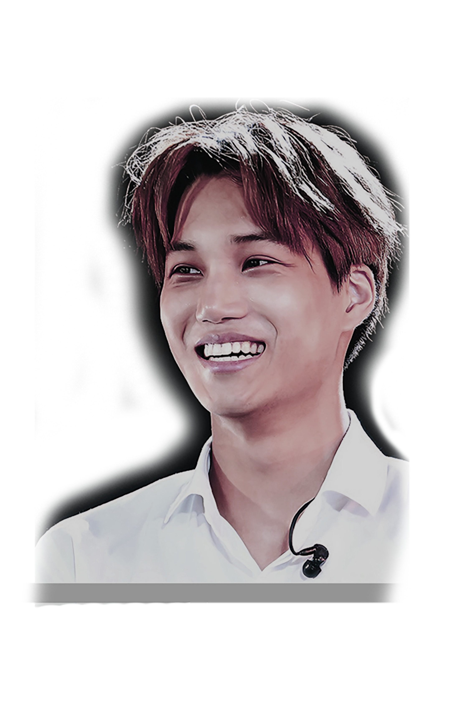
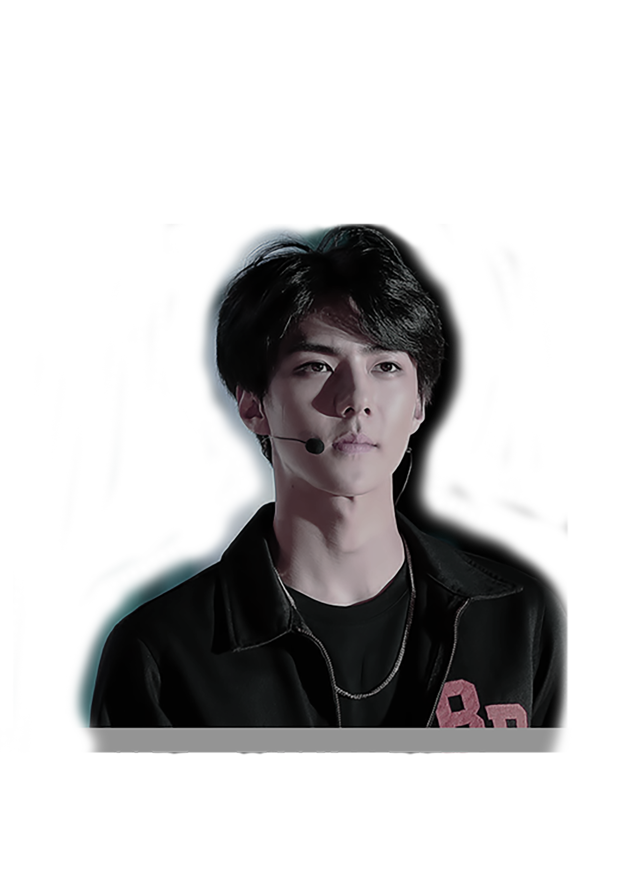

Xiumin – Kim Minseok
Kind, very, very clean and tidy, cute, prankster, funny.
His nicknames are Bao Zi (Little Bun),Mandoo, King of Detail.
He is a good cook.
He knows Taekwondo, Fencing, Kendo, and Soccer.

Suho – Kim Junmyeon
He became a SM trainee in 2006, when he was 16.
out of all of the EXO members, he’s the best at public speaking.
polite and considerate.
likes joking a lot, but the members say his jokes aren’t funny.

Lay – Zhang Yixing
He speaks Chinese, Korean and English.
Lay has a 4D personality.
His favorite foods are tidbits, junk food, anything he cooks.
He’s rather naughty, but he’s really funny at times too.

Baekhyun – Byun Baekhyun
His nickname is “Bacon”.
He is a bright, cheerful, childlike person.
He prefers playing games in his free time.
Aikido, Piano, listening to music, watching movies, singing.

Chen – Kim Jongdae
Well known for his poweful voice and highn otes.
Has a humorous and very playful personality and is very hyper.
He likes to joke around and prank his fellow members.
Chen made his debut as a solo artist with “Beautiful Goodbye”.

Chanyeol – Park Chanyeol
He is the one that designed EXO’s hexagon logo.
Always cheerful and bright; and is a romantic person.
He has a habit of following rhythms with his hands.
Confessed one time that he cries the most among EXO members

D.O. – Do Kyungoo
quiet, acts like a mother to the other members, sentimental, & considerate
loves cooking and mostly cooks for the members.
is always tidy and likes to sort things by color, brands, and type.
He prefers it if other people initiate conversations and gets close to him (cos he's shy).

Kai – Kim Jongin
Kind-hearted, quiet, shy, and very gentle, hard to express feelings.
His focus is Dance: ballet, jazz, hip hop, popping, rocking.
He says that as long as people love him,
he’ll return that love with double the amount.

Sehun – Oh Sehun
shy, playful, and the baby of the group.
He’s not really good in pronouncing the letter S.
He’s really close to Suho. They know each other for 12 years.
Sehun is ranked 15th on TC Candler “The 100 Most Handsome Faces of 2018”.